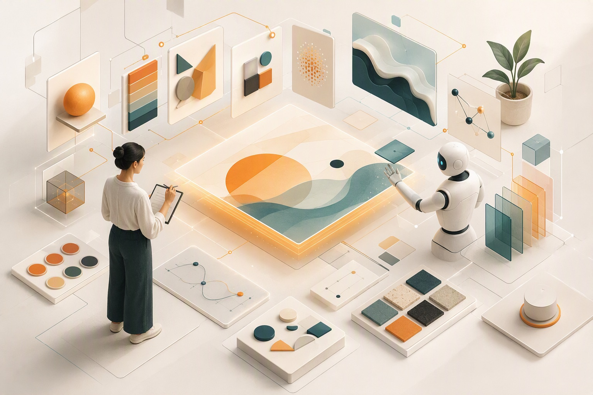

2026 云栖大会设计方向观察：当界面可以被即时生成，设计的价值正从执行转向对意图、体验与价值的定义。
本文聚焦 2026 云栖大会（9 月 22–24 日，杭州）设计方向的专业论坛——「AI 原生设计专场｜Design to Build」「Go Vibe Designing：AI 时代的设计新编译」「AI 设计原生力：Agentic Design 工作坊」，以及设计生态相关场次，整理各嘉宾传递的核心思想与阿里巴巴及伙伴企业的真实实践。
内容基于大会官方议程与会后官方摘要，并援引「阿里云设计中心」官方公众号回顾文章及第三方公开报道交叉佐证。
口径说明：文中效率、提效、规模类数字除注明来源外，均为讲者或企业现场自述口径，多数未披露样本量与统计周期，供参考而非行业基准；产品与项目发布状态以阿里云官方公告为准。
从设计对象、交付物、角色到度量方式，设计方法论正在被系统性重写。
阿里云提出"设计新编译"：把人的意图、审美与价值判断，编译为智能可理解、可执行的表达。
王路平 · 阿里云设计中心Design Spec、Design Skill、设计知识库成为 Agent 可调用的工程资产；CloudAI Design 宣布开源，ADI 正式发布。
Design to Build 专场方案生产者 → 方向定义者、协作组织者、质量负责人。稀缺能力不再是画图，而是设计判断力（taste）。
多场共识ADI 以意图达成率、高价值意图覆盖、主动服务质量、信任四维度评价 AI 产品；度量从事后"体检报告"走向实时"心率监护"。
刘骏 / 姚映佳16 位真人专家对 16 个 AI 孪生专家对照：AI 评估效率 15 倍、问题发现有效率约 80%，但审美判断稳定性显著更差。
程遥 · 对照实验Design Skill 能转译风格却不能赋予情境敏感性；输入平庸、风格被无限复制时，AI Slop 会演化为 Taste Slop。
谭啸 · Design to Build「设计灵感社」展出 12 项设计 Skills，覆盖界面生成、视觉规范、设计研究、数据可视化、体验度量与创意生产。
Agentic Design 工作坊"古壁生辉"公益项目联合四所高校，用 AI 重现壁画、石窟、书法与傩戏等传统文化遗产。
Go Vibe Designing本届设计浓度最高的一场论坛。核心命题：当 AI 成为产品体验的底层能力，设计应如何重新定义自己的方法、边界与价值。
在主题致辞中给出 AI-Native Design 的定义：围绕意图、上下文与智能协作构建产品的新设计理念，目标是从"让 AI 回答问题"转向"让 AI 完成任务"。他提出设计对象正由界面扩展为五层能力栈——设计不再只交付设计稿，而要深入模型、平台和应用各层，参与模型能力建设、智能体约束与评测以及最终产品构建。
正式发布 AI Design Intelligence（ADI）——把设计经验转化为"可调用、可执行、可验证"能力的 AI 设计引擎，由三部分构成。他还分享了一个重要的组织洞察：企业并不缺 AI 工具，真正缺的是组织人与 Agent 的方式；旧的设计经验并未失效，而是要在 Agent 语境下重新表达——比如"控制感"从二次确认、撤销和回滚，延伸为过程可见、可随时介入和接管。
按产品上下文组织设计原则（Principle）、规则（Rule）、模式（Pattern）与案例（Case），并进一步转成 Skill——同一份知识既帮助设计师判断，也能指导 Agent 执行。
贯通探索生成、精修收敛、系统交付三阶段，分别匹配 Prompt/多模态输入、Canvas 直接操作、组件原生工作空间；已上线 8 支覆盖用研、交互、视觉、工程和评估的设计专家 Agent Team。
体验评价从功能使用转向意图完成，围绕意图达成率、高价值意图覆盖、主动服务质量和信任四个维度。
贡献了本届最锋利的警示：Design Skill 能把风格和品位转成约束，却不能赋予 AI 对情境的敏感性；当输入平庸、风格被无限复制，AI Slop 会进一步演化为 Taste Slop，带来"审美通货膨胀"。但硬币的另一面是：工业化也能降低优质设计的可获得成本。实践侧，他展示了设计师深度参与万相模型的美学训练（训练方向、美学标准、专业标注、评测迭代），以及阿里云百炼改版中"设计原型 → 代码原型 → 生产级代码"的三段式演进——正式代码库被视为唯一真实信息源，其中一位设计师完成了 40 多次、38 万行以上的代码提交。
品位是持续选择的过程，而非一次选择的结果。AI 是否导致审美升级，取决于人是否保留目标、判断与主导权。
其团队沉淀的 Design Skill 构成（现场自述口径）
从一线团队视角给出设计新范式的三条落地路径：把需求理解、设计原则与组件规则封装为 AI 可读的 Skill；把重复执行工具化、协作流程工程化；把有效的单点实践沉淀为团队可复用能力（Skill Hub）。其团队的 SmartAdapt 多媒介适配方案在具体场景报告了约 70–80% 的提效（团队自述口径），但设计师仍负责核心视觉和结果把关。他强调 D2C（设计稿转代码）的质量上限取决于设计稿本身的规范性：样式变量与 Token、语义化组件、自动布局、状态流转缺一不可。
AI 不是设计师的替代者，而是由人定义分工、边界和质量标准后，用来放大判断与执行能力的协作者。
论坛上启动行业规范共建（工信部国际合作中心工业所、阿里云等参与），包含行业指南白皮书、人才培训与认证体系、设计领域 OPC 共建计划和行业案例库四部分——设计方法论的行业标准化正在提速。
来自云计算、产品设计、AI 影像、影视工业与体验研究等领域的嘉宾，共同讨论当 Agent 与生成式技术进入真实生产流程，设计的对象、方法与角色将如何变化。
提出本届设计方向最具概括力的命题——"设计新编译"。他引用 Figma《2026 AI Report》：设计师进入开发环节的比例从 2025 年的 21% 升至 2026 年的 42%；阿里云设计中心内部这一比例从 40% 升至 80%。当生成、原型和页面构建越来越容易，稀缺能力转为设计判断力：前期识别真实问题、定义意图，中期组织人、Agent、Skill、上下文与工作流，后期设定质量标准并对结果负责。
意图、工程编排，以及最后的审美判断，都是接下来 AI 时代判断力的重要内容。
设计新编译并不是把设计交给机器，也不是让设计师退到技术之外，而是要求设计更深入地参与技术、业务和现实。设计能够把能力转化为体验，把选项转化为决策，把技术转化为意义。
将设计能力整理为开发工具包（Toolkit）与设计指南（Playbook），开发者可通过 npx skills add CloudAI 直接调用设计能力构建产品体验，代码入口为 github.com/Alibaba-Cloud-Design，并融入 AgentScope 开源框架。设计方法正在成为 Agent 可调用的工程资产，像依赖库一样被安装和引用。
总结了企业级设计服务的四个迁移：从被动使用工具到主动创造工具、从多格式设计资产到多模态设计系统、从交付界面和规范到 Agent 可执行的规则体系、从后方支援团队到人+模型+数据+业务的纵深综合团队。最有说服力的案例是 NBA AI 手办工作流：过去一个新场景需要 2–3 名设计师投入 1–2 周；封装为 Agent 后，客户上传活动主视觉约 2 小时即可完成场景资产搭建，并可一键发布为办公平台 Skill。
AI 时代的设计团队不是用更多人更快画图，而是让更少的设计师通过工具、规则和系统组织更多设计产能。因为设计不只是给出答案，更是定义问题。
给出了"让 Agent 学会设计"的完整机制——上学、考试、入职：以 9 本设计书籍、11 条心理学定理、13 项核心设计理论和 80 条设计规则建立知识底座；用 6 维度评估数据集"考试"；再以品牌手册、设计系统、产品定义、代码规范四类可插拔业务资产"入职"。一场 16 位真人专家对 16 个 AI 孪生专家的对照实验给出了人机分工的量化依据。
16 位真人专家 vs 16 个 AI 孪生专家对照实验（现场自述口径）
在未来所有的准确性被技术征服以后，或许审美和表达的多样性，将成为人们最终的追求。
带来消费电子视角的"刻度"实践：把体验从"玄学"转为满意度、NPS、溢价、份额等可比较的商业语言；AI 进一步把设计对象从界面改为意图与结果，体验度量从事后"体检报告"走向实时"心率监护"。组织侧，安克把业务拆为 AI 可执行的原子步骤。
安克创新披露数据（企业自述口径，各数据与阶段对应关系未逐一说明）
AI 时代，所有东西都值得围绕体验重做一次，也值得用 AI 重做一次。而 AI 带来的新生产力萌芽，很可能让第二次文艺复兴发生在我们身边。
从 AI 电影工业角度提出：AI 视频已从单点生成进入工业化生产阶段，设计问题由"能不能做出来"转向"能否稳定、精准地控制"——创作者需要把角色一致性、细腻情绪、动作迁移、空间构建和云端协作整合进同一套生产系统，使电影变得可计算、可复用、可协作、可规模化。
真正决定作品能否打动人的，仍然是对文化、故事、人物关系和真实情感的理解与设计。在人工智能时代，真正生存的逻辑是如何处理和人的关系。
从影视工业角度补充了组织维度：AI 影视工业化的护城河不是孤立的生成工作流（他称之为"涸泽而渔的生意"），而是"超级个体—精英小队—创作中台—培训机制—内部工具"的组织系统，知识、经验、流程和规则每周沉淀为内部工具。他同时警示精品内容不能被简化为"一人一夜完成电影"的速成神话。
蒸馏冗余而不蒸干艺术与人。核心的力量、核心的创作，那些闪闪发光的人们不能被压缩，不能被蒸馏。
阿里设计携手西安美术学院对山西平顺大云院《维摩诘经变》壁画进行 AI 数字化重现，并联合宁波大学（云冈石窟交互体验"万象和鸣"）、中国美术学院（书法生活美学平台"为未书"）、浙江大学（文化计算项目《傩场》）等高校探索传统文化的数字新生——AI 设计能力正在溢出商业场景，进入文化传承领域。
实操向分会场。总纲：当 AI 成为设计工作的原生环境，设计师的价值正在转向规则定义、系统构建与质量判断。

设计不再只是"把结果做出来"，更是在建立一套人与 Agent 可以持续协作、共同演进的生产方式。
朱颜提出 Design I/O——把业务 Context、设计规则、组件与 Skill 组织成可被 Agent 持续调用的 Loop，让设计从一次性输入输出变为"持续输入、运行、评价与回流"的闭环。协作方式也在变化：画布与代码不再是上下游，而是同一个产品的两种编辑视图，产品开发从接力赛变成多人同时编辑一个活的系统。余艾琳则展示了声明式 GenUI 与设计资产规则体系：界面围绕任务动态组合、Human-in-the-Loop——"界面不再只是被设计出来，也可以在意图中被组织出来"。
提出 Design Grammar 框架：设计知识 Agent 整理经验、设计工程 Agent 把可视化资产转为 Agent-ready 材料、Spec + 协同画布 + 组件化工作流连接多角色与多 Agent，协同推进方案与完成交付。
当 Agent 与设计师拥有同样的知识，拿着同一份材料，坐在同一张工作台前，它才能真正进入设计工作流，产生生产价值。
郭梦妍 / 林点雨：AI 生成加速后，体验判断成为新瓶颈。把 UES 体验度量体系转化为 AI 可理解、可执行、可复核的判断系统（情境适配、准则拆解、多视角评估与证据收敛，构建虚拟用户和 AI 专家评估），封装为 Skills 让体验评估左移、贯穿研发全周期。
杨光涛（阿里云）/ 张宇翔（LibTV）：AI 视频的下一场竞争不只是模型效果，更是创作体验与工作流的竞争——从单次生成走向稳定、可控、可复用的规模化生产。
吴坷：面向传统行业智能化转型的"价值场景识别 → 智能转型落地"全流程咨询方法——设计师的工作正在从"造工具"变成"配搭档"。
AI UX 不是消除随机性，而是在随机性中建立控制点。第一次生成决定惊喜，第二次修改决定产品是否专业。
大会 3 号馆「设计灵感社」集中呈现 12 项阿里云智能设计中心打造的设计 Skills，覆盖界面生成、视觉规范、设计研究、数据可视化、体验度量与创意内容生产——把设计师长期积累的方法、规则与判断标准转化为 Agent 能理解和执行的能力，是"设计经验可调用、可复用"的具象展示。
设计方法论的重写不只发生在云厂商，也在车企座舱、创意工具与平面设计学界同步展开。
对汽车行业产品团队尤具参考价值。蔚来以 Brand Native Design 处理 AI 与品牌的关系，用"纯粹、有温度、精致、未来感"四个品牌维度组织 AI 座舱设计表达；NOMI 的表达维度覆盖面部表情、手势、配件、超自然 TTS、硬件动作和全感座舱；并提出"未来汽车 = 物理世界智能体"。即便在最激进的 AI 化中，品牌一致性与能力边界仍是设计的"不变量"。
中日韩印区域设计负责人：分享设计工具在 AI 时代的进化——连接创意、专业控制与规模化生产。
主席：从平面设计的学术立场探讨 Prompt 与设计的关系。
学界、AI 艺术家与产业方共同辩论。这个问题本身没有标准答案，但已成为设计行业必须直面的时代命题。
综合本届设计方向各论坛的思想与案例，对正在推进 AI 转型的设计组织可操作的落点。
Token、语义化组件、设计规则、验收标准不仅要给人看，还要封装为 Agent 可调用的 Skill/Spec。CloudAI Design 的开源形态（Toolkit + Playbook + 可安装 Skill）提供了可参照标准。起步建议：选一个高频设计场景，写清意图、成功标准与规范，设置生成前后的自动评价关卡，记录人工基线、Agent 耗时与返工率。
为 AI 产品建立意图达成率、高价值意图覆盖、主动服务质量、信任四维度的度量体系；把 NPS 等终点指标与全旅程实时感知指标并置，让体验评估从"体检报告"变成"心率监护"。
生产力被放大后，"决定做什么、做到什么程度"成为新瓶颈。用可体验的原型替代长文档评审，用评测集替代静态规范，先上线小版本再看数据修正标准——判断力靠"亲手做、认真判断、看结果、再修正标准"逐轮积累。
参照"AI 评估效率 15 倍、有效率约 80%、审美稳定性不足"的实验结论：规则明确的重复执行（适配、走查、测评、初稿）大胆交给 Agent；意图定义、审美选择、价值取舍和结果责任留给人。警惕 Taste Slop——保留目标、判断与主导权。
把高手的方法、规则与判断标准沉淀为组织级 Skill 与知识库（如 Skill Hub、Design Grammar），使设计产能从"依赖个人"转向"可调用、可复用"，用更少的设计师组织更大规模的智能产能。
| 论坛 | 时间 | 核心命题 |
|---|---|---|
| AI 原生设计专场｜Design to Build | 9.23 | AI-Native Design 五层能力栈；ADI 发布；行业规范共建 |
| AI 设计原生力：Agentic Design 工作坊 | 9.23 | 四大设计工作流实操：Vibe Designing / Agent 产品设计 / 体验度量 / 设计咨询 |
| Go Vibe Designing：设计新编译 | 9.24 | 设计判断力；CloudAI Design 开源；Agent"上学—考试—入职" |
| 设计生态相关场次（车企/工具/学界） | 9.23–24 | Brand Native Design；创意工具进化；创造力圆桌 |